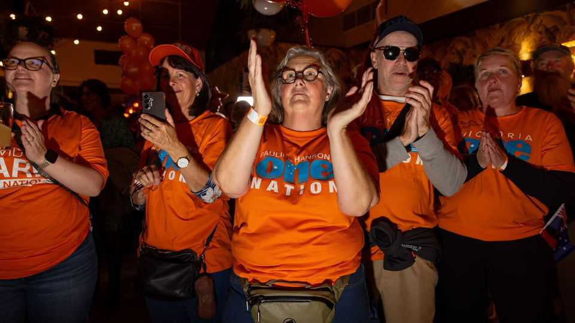

The rise of One Nation is melting Australian politics
Could the tumult produce a new party?
June 4th 2026

SEVEN YEARS have passed since Tony Abbott, an arch-conservative who served as Australia’s prime minister from 2013 to 2015, lost his seat to an independent. Last month his stint in the political wilderness came to an end. On May 29th the Liberal Party, now in opposition, elected him as its president. Its members are counting on Mr Abbott and Angus Taylor, the party’s parliamentary leader, to achieve an urgent mission: to help the right-of-centre Liberal-National coalition survive the stunning rise of Pauline Hanson, and her anti-immigration One Nation party.
One Nation’s surge continues to smack gobs (see chart). In April Redbridge, a leading pollster, predicted that if an election were held immediately Anthony Albanese’s ruling Labor Party would win 76 seats in the lower house, out of 150. But One Nation would become Australia’s official opposition, with an astounding 53 seats—up from only two at present. The Liberal-National coalition, for its part, would limp home with a mere dozen. Since that research was published, things have only continued moving in Ms Hanson’s favour. Another poll, capturing public feeling in mid-May, showed support for One Nation eclipsing even that for Labor.

One Nation is already proving that it can convert its strong polling into seats. It picked up seven of them at the state election in South Australia in March. In May One Nation’s candidate won a federal by-election in southern New South Wales—in a constituency that had been held by the coalition for some eight decades. A state election in Victoria in November (considered Australia’s most progressive state) will soon show whether One Nation is able to wrest seats from Labor too. The Labor government there is in trouble because of eye-watering state debt and scandals related to public infrastructure projects.
Dismayed by the direction of travel, a clutch of independent politicians who in recent years have secured seats in Australia’s parliament are stepping up discussions about forming a new centrist party that might do better than the old guard. These so-called “teals” combine right-of-centre fiscal instincts with social progressivism and a climate agenda more aligned with the Greens. They already often vote as a bloc. Many have received funding from the same outfit, Climate 200, a vehicle for candidates who promise to cut emissions and restore faith in politics.
Zali Steggall, a barrister and former Olympian, is one of those arguing for a new centrist party. She was the novice candidate who managed to boot Mr Abbott from parliament, back in 2019. She says she is “genuinely worried about the rhetoric of One Nation, and where the coalition is moving to meet it”; she says Australian voters deserve more choice at the ballot box. Another factor accelerating things is looming changes to electoral-funding laws, due to go into force next year, which will hobble independent politicians at the next federal election in 2028.
The Liberals’ decision to dust off Mr Abbott is a gamble. As prime minister he ditched a carbon price, launched a military operation to intercept asylum-seekers at sea and gave a knighthood to Prince Philip. Whether he can help change the coalition’s fortunes in time for the next big vote is deeply uncertain. One thing is sure: the days when Australian politics were a cosy duopoly are long gone. ■
For exclusive coverage of Asian politics, economics and security, sign up to Asia Bulletin, our weekly subscriber-only newsletter.